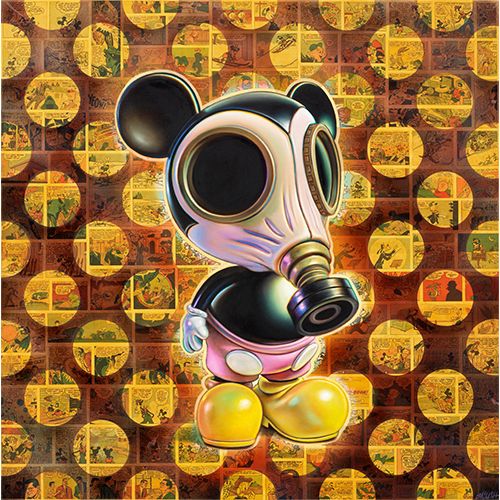
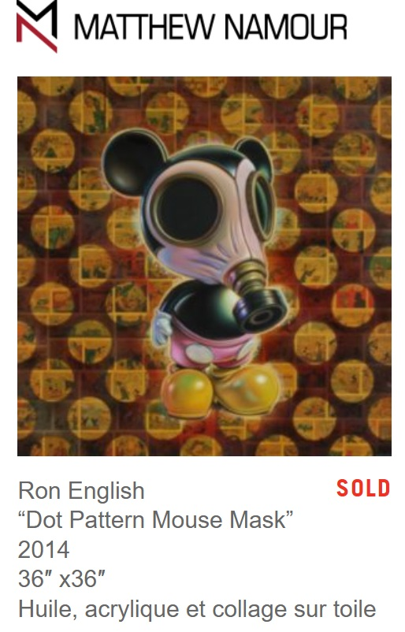
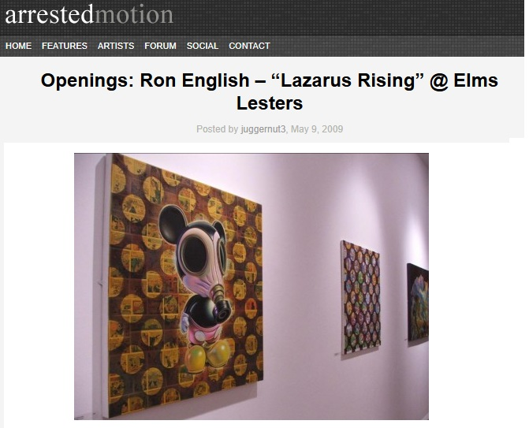
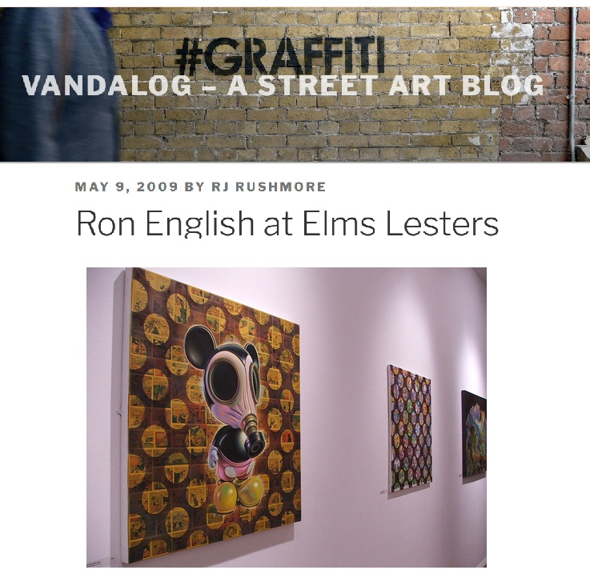

Exhibitions
Lazarus Rising, Elms Lesters Painting Rooms, London, United Kingdom, May 8–June 6, 2009.
Literature
Ron English, Lazarus Rising (London: Elms Lesters Painting Rooms, 2009), p. 25.
Ron English, Death and the Eternal Forever (London: Korero Press, 2014), p. 131. ISBN 978-0957664920.
Ron English, Status Factory: The Art of Ron English (San Francisco: Last Gasp of San Francisco, 2014), p. 23. ISBN 978-0867197891.
Notes
The work’s inclusion in Lazarus Rising is documented in the exhibition catalogue.
This work was used as the cover image for Status Factory: The Art of Ron English.
Matthew Namour Gallery’s artist page for Ron English documents this work with matching dimensions and medium, but lists the date as 2014. This catalogue retains the 2009 date based on the Lazarus Rising exhibition-catalogue documentation.
Ancillary Documentation



Selected Online Circulation
Selected examples of the work’s online circulation, reproduction, or discussion. This list is not exhaustive; it is intended to document representative appearances of the image beyond formal exhibition and publication records.